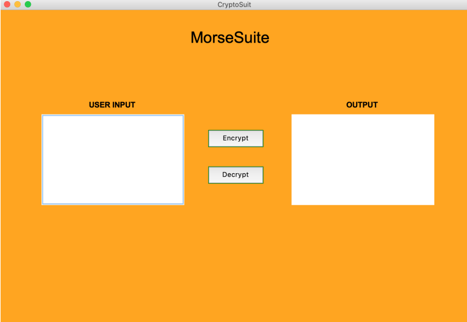
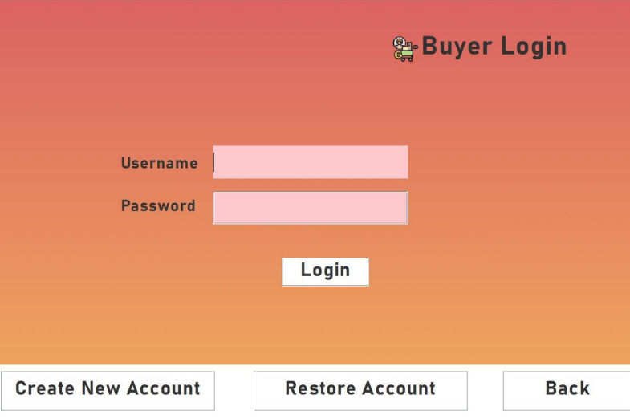
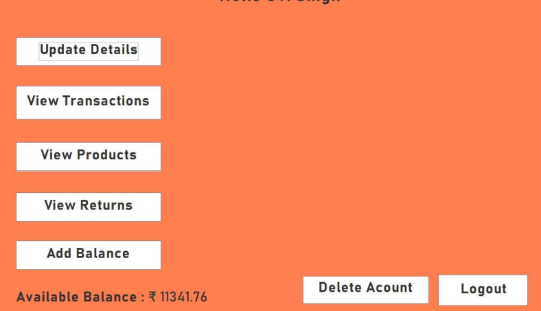
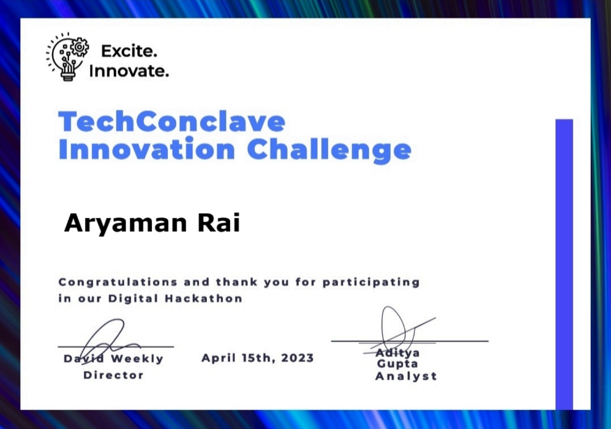
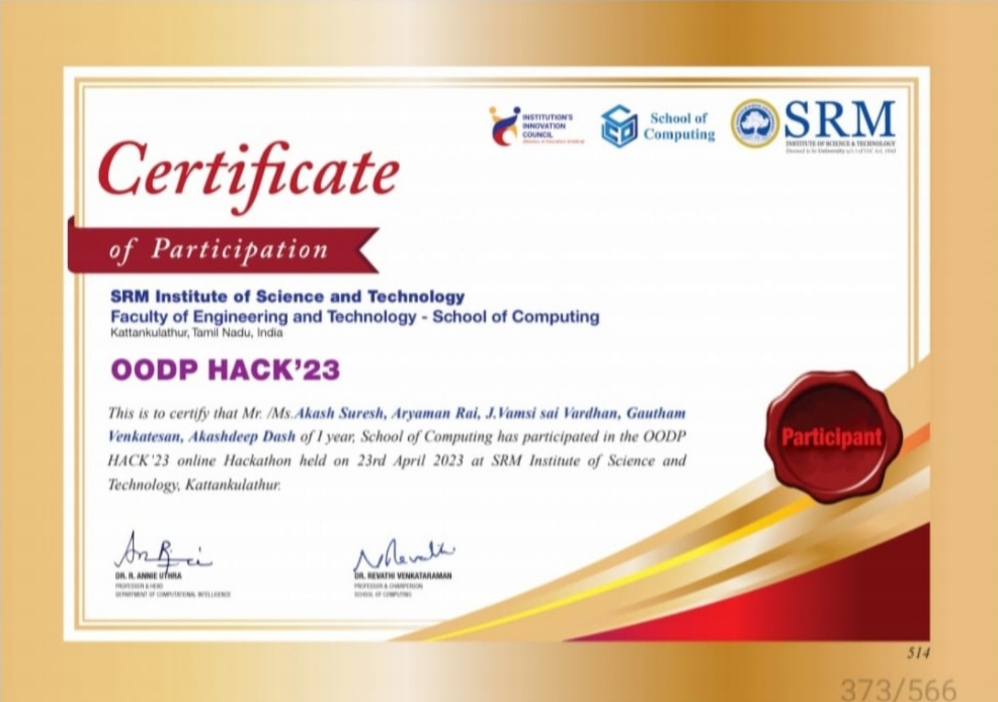
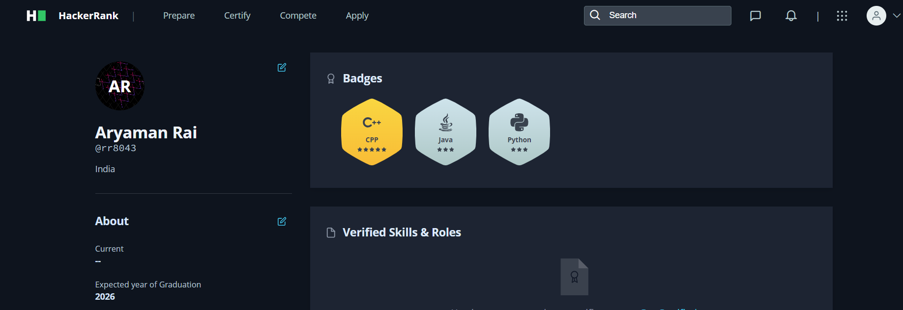

Computer Science Enthusiast
Hello, I am Aryaman Rai [RA2211003012063] from O2 section, a tech enthusiast and avid academic. Welcome to my data structures and algorithms portfolio for the year 2022-2023.
Hello, I'm Aryaman Rai, currently navigating through my second year of pursuing a Computer Science degree at SRM University KTR. My academic journey commenced at PSBB Siruseri, Chennai, where I laid the foundation for my scholastic pursuits. Beyond the classroom, I am deeply engrossed in the world of chess, where I tread as a semi-professional player. This strategic pursuit aligns with my fascination for problem-solving, a quality that seamlessly transitions into my enthusiasm for back-end development. Intrigued by the elegant logic of algorithms, I am on a perpetual quest to expand my knowledge of data structures, driven by an innate curiosity for their application in software architecture. Beyond the realm of code, I possess a unique aptitude for mental math, a skill that intertwines seamlessly with my analytical mindset. Currently, I am an active content creator within the vibrant atmosphere of PlacFVS, a club in my college that plays a pivotal role in guiding and preparing students for placement-related processes. This experience allows me to combine my technical skills with effective communication, creating a bridge between the intricacies of coding and the collaborative world of teamwork.
Crafted using Python and the Tkinter GUI library in VSCode, this project seamlessly translates text to Morse code and vice versa. The intuitive interface simplifies the user experience, while the underlying code, implemented with dictionary structures, ensures efficiency in the translation process.
Dive into the world of e-commerce with Shopzilla, a shopping website brought to life using Java, HTML, and CSS. Leveraging JDBC for database interactions, this project provides a comprehensive shopping experience. Explore a virtual marketplace where sleek design meets functional elegance, offering shoppers a seamless journey through a variety of products.
 I enthusiastically participated in my university's hackathons, dynamic events that brought together innovative minds. My team collaborated on a project that blended technology and creativity to address real-world challenges. The experience was a whirlwind of coding, problem-solving, and networking, leaving me with newfound skills and unforgettable memories.
 My journey on HackerRank reflects my intermediate-level proficiency in Java, Python, and C. Achieving stars in these languages showcases my dedication to mastering the intricacies of coding. Each challenge conquered on HackerRank is a step toward refining my problem-solving skills and enhancing my coding prowess.
Computer Science and Engineering
NAME: ARYAMAN RAI
PHONE: 8015395411
EMAIL: rr8043@srmist.edu.in
Feel free to reach out to me for collaborations, discussions, or just a friendly chat...